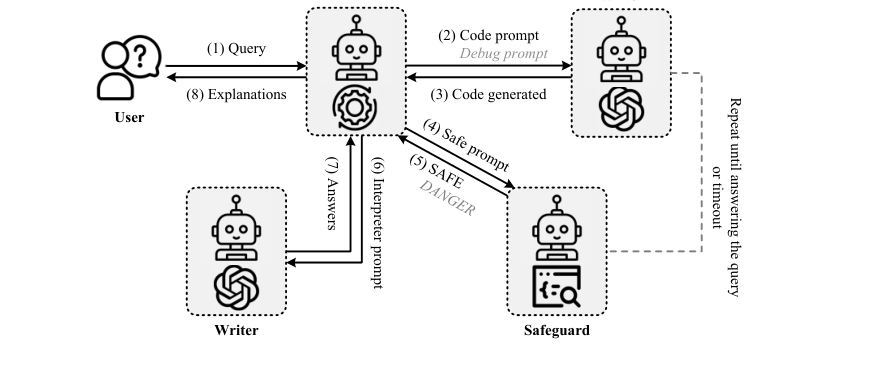

Decision Information Meets Large Language Models: The Future of Explainable Operations Research
EOR combines optimization modeling with what-if analysis and explanations of both code revisions and resulting decisions.

EOR routes what-if requests through a Commander, Writer, and Safeguard, then returns explanations after the updated code passes verification.
01 / Research question
How can users understand how a requested change alters an optimization model, its solution, and the reasons for the resulting decision?
02 / Approach
Explainable Operations Research (EOR) uses three cooperating agents. The Commander interprets a user’s what-if query and routes the code; the Writer updates the optimization program and produces explanations; and the Safeguard checks the code for safety and logical or syntactic errors before execution. The system returns both an attribution explanation of the problem and solution elements and a justification explaining why the updated solution follows from the changes.
03 / Research scope
The paper evaluates modeling accuracy on an industrial benchmark using four GPT-4 versions in zero-shot and one-shot settings. EOR exceeds Standard and OptiGuide in all reported rows; GPT-4-Turbo reaches 88.33% accuracy zero-shot and 95.33% one-shot. The authors also compare what-if analysis capabilities and distinguish EOR’s support for complex decision-information and sensitivity analysis from OptiGuide’s narrower setting.
Experimental results
Modeling accuracy under zero-shot and one-shot settings
| Method | Standard | OptiGuide | EOR |
|---|---|---|---|
| Zero-shot · GPT-4 | 18.67 | 30.33 | 75.67 |
| Zero-shot · GPT-4-1106-preview | 75.33 | 36.00 | 81.67 |
| Zero-shot · GPT-4-0125-preview | 68.33 | 47.33 | 87.33 |
| Zero-shot · GPT-4-Turbo | 63.00 | 30.33 | 88.33 |
| One-shot · GPT-4 | 71.67 | 75.00 | 90.33 |
| One-shot · GPT-4-1106-preview | 69.67 | 55.33 | 87.67 |
| One-shot · GPT-4-0125-preview | 76.00 | 69.33 | 92.00 |
| One-shot · GPT-4-Turbo | 88.00 | 69.33 | 95.33 |
The experiments use four GPT-4 model versions with fixed temperature and shared one-shot examples. The benchmark contains internally developed queries.
EOR has the highest accuracy in every reported model and setting. The results support the value of its integrated model update, verification, and explanation workflow.
Citation
@inproceedings{eor2025,
title = {Decision Information Meets Large Language Models: The Future of Explainable Operations Research},
author = {Yansen Zhang and Qingcan Kang and Wing Yin Yu and Hailei Gong and Xiaojin Fu and Xiongwei Han and Tao Zhong and Chen Ma},
booktitle = {ICLR},
year = {2025},
url = {https://proceedings.iclr.cc/paper_files/paper/2025/hash/a48e5877c7bf86a513950ab23b360498-Abstract-Conference.html}
}